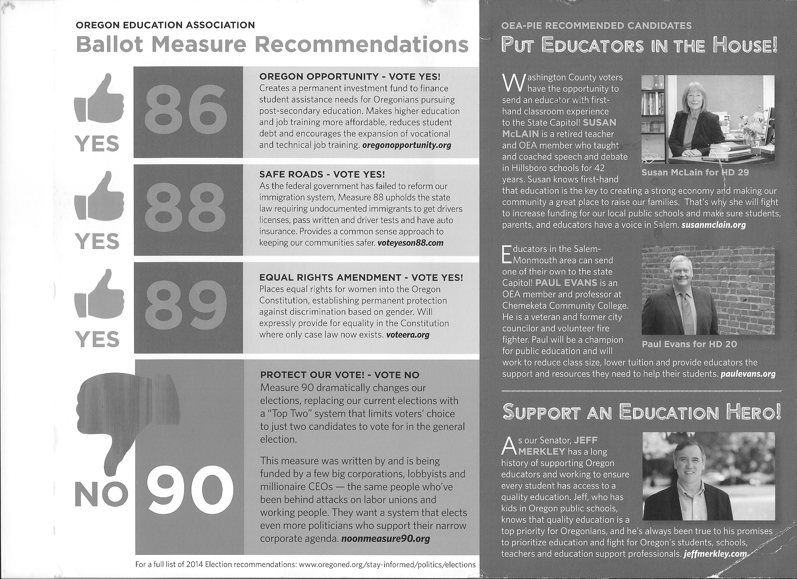
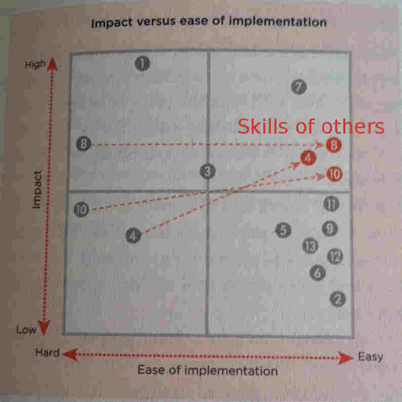

Table of Contents
Thinking
Many people justify their argument by making a model of reality and then state conclusions that can be made from that model. However, if the model doesn't sufficiently describe reality (whether Cardiac Output estimation or economics), than you need to do more study and testing with real-world data before you can make any conclusions.
- Books suggested by Koinonia House: A Christian's Guide to Critical Thinking, Discerning Truth, and Come Let Us Reason
- Pastor Matt recommends Peter Kreeft's Socratic Logic text, but it is dense and didn't make all the way through it.
- Alex recommends Rational Thinking by John Bennett
- CMU Andy Norman (who talked at humanist thing) professor wrote an intro to reasoning using the Theseus software here. Might be helpful someday.
- The inefficiencies of an unrestricted large group. Typically leads to over-spiritualizing the Biblical text at hand. We read it in Pastor Andy small group during the summer. Evidenced by Ch. 11 in Grasping God's Word
What is the meaning of the Matthew and 1 Corinthians passages on thinking? —> What does God think about thinking? Is suffrage giving women the right to vote?
Try to generalize the points or opinions that are made. In terms of education, we are ranking school subjects based on their applicability to life, and the businessman (when recommending subjects of study for young students) is making a ranking of that based on his own biases/worldview.
Jay Heinrichs Rhetoric / Arguing book is good intro. Trying to find a good theology justification and intro book too. Maybe Pastor Matt is best bet, otherwise “A Little Book for Theologians: Why and How to Study Theology” seem good too.
White board thinking website: https://thoughtwriter.org/whiteboard.html
TEACHERS
- PCC Rock Creek, Bill Bogart (teaches Reading 115)
- Peter Kreeft
- Online debate about The Best Things in Life (Socrates)
TUTORIALS
Critical Thinking Web (Hong Kong)
Todo
- Redo necessary and sufficient conditions and next section on possibilities (skipped, hard)
- Read over teaching critical thinking and see common hangups? http://philosophy.hku.hk/think/critical/teach.php
- Reread creative thinking section
Quotes
He who establishes his argument by noise and command shows that his reason is weak.“–Michel Montaigne
READ EM: http://www.argunet.org/2013/07/22/three-online-tutorials-on-argument-analysis/#more-378
Software
Great one is a free and online website, http://en.arguman.org
My Requirements
- Should support fast text search, especially of a large argument
- Easy to move and reorganize, tag
- Rank arguments and evidence as strong, weak, etc.
- No drag and drop. Just start typing and the structure should be obvious using words used.
- While we're on that…maybe start suggesting structure from text you are reading automatically
- Collaboration, similar to Google Docs where you can work on the section you are interested in
How do I quickly come up with the assumptions of the argument?
- (Lukeprog): Argunet is best free, maybe, and Rationale is obvious winner ($70 though)
Analogy / Examples
Bad
- Book of Mormon “clarifying” the Bible like adding another nail to an insecure nail on a board. from the teaching books
- Political spins and oversimplifications on issues (one recent elections mailing) 
{kind=link}
Problem Solving 101
Ken Watanabe
Problem Solving: A reliable method to get from your present (Pt. A) to your dream (Pt. B).
<You will learn the most and most efficiently when you> try it out and put it into practice, noting where you succeeded and you failed.
- Only then do I help them ask the important questions and provide them with tools for their future projects. <similar to Pastor Andy's description of seminary, and the importance of being involved in a ministry at the same time>
Problem solvers
Do the scientific method!
- Identify all potential root causes / solutions, from all team members, no matter how crazy sounding. You'll figure out the effectiveness later, but at least it's written down to analyze.
- Develop a hypothesis for the likely root cause, or figure out the “best” solutions to try based on an XY plot of ease of implementation and impact: 
- Collect data that tests the hypothesis (no other data)
- The same goes for reading!
{kind=link}
Critical Thinking for Beginners
Oxford University course. Audio on iTunes and on YouTube. Fairly straightforward stuff, except episodes 5 and 6 are pretty intense. I feel like they could be explained with just venn diagrams though. The difficulty is in recognizing the premises and conclusions and logical structure of the argument of the person you are talking with, in real time (really hard apparently)
- Good arguments are where both sides want to discern truth and want to listen to the other person and change.
Ep 6
Self Sealing Argument
Women are stupid, and any appearance to the contrary is because they are slightly clever. They have “explained away” all arguments against them
Weasel Words (Selfishness)
Note: This is really difficult to do in real-time in practice.
| Person 1 | Person 2 |
|---|---|
| Human beings are selfish. | But lots of people aren't selfish, they're altruistic! Like Mother Theresa |
| But she was selfish, because she did what she wanted to do! | No, it was out of <duty?>! |
| But she still wanted to do her duty! |
- We have a classic weasel word problem. Person 1 is using different definitions of selfishness:
- Selfishness: Not acting in the interest of others. Mother Theresa clearly is acting in the interest of other people
- Selfishness: Acting on your own interests <even if they are “unselfish” things>
- Note: Re-reading this, I don't get it
- Aren't there limitations to logic?
Another one (not from the class) is whether we can find Truth apart from God or not. But I forget it… Another one is a common athiest argument that if God is all-powerful and He is good, then how do bad things still happen?
- Assumption: Bad things happen
- Conclusion: Either God is bad, or he is not all-powerful. Neither of which are good outcomes for the religious person.
Thinking As A Science
Written by Henry Hazlitt. Free online!
Ch. 1 The Neglect of Thinking
Hazlitt thinks neglect of thinking is an evil, almost a superset of all the other evils. Normative science seeks to produce a “norm” or ideal, based on information found by “positive” subjects. The science of thinking is a normative science. Logic is helpful too.
Ch. 2 Thinking with Method
- A man of method understands the model which his thinking falls under. What knowledge is of most worth?, then determines a ranking system for the subjects.
- Answer important questions, not needless ones.
- You can look at things from different perspectives. Prohibition:
- Government: Should government interfere with individual liberty?
- Psychology: Will banning alcohol drive people to more dangerous drugs?
- To observe most profitably, just as to think most profitably, we must have a definite purpose. This purpose must be to test the truth of a supposition. Don't agree
- We are often aided in the solution of a problem by asking its opposite.
- Analogy consists in noting certain likenesses between things, and assuming that they also possess other common qualities.
- Think a concept out for yourself first before relying on other sources or history for help. It will give you the practice of improving your own thinking and see where you faltered.
- State your question and “evaluation function” / requirements clearly! Example of the a priori method
- Finding an efficient shorthand system: Create certain characters or symbols which will (1) take the shortest time to write, (2) will be easily recognized by yourself or others, even if written carelessly, and (3) which will not be so numerous or so complex as to be difficult to learn.
- Start brainstorming down this path, like you might try writing down all the simplest symbols you can think of. Or you might ask yourself whether there is any fundamental geometrical figure from which you can derive your symbols. Or you might study the simplest and easiest movements of the hand, and base your characters on these.
- This a priori method is most apt of all to provoke real thinking. It should therefore be taken up before any of the others. Not only is it best for making you think deeply, but it will be more likely than any of the others to make you think originally. However, whether attended by great or little success, this method should be followed by others.
- One can also look at the history of shorthand systems and theory.
- Often you need to work on smaller subproblems in a certain order to get to your final destination.
Ch. 3 A Few Cautions
- Constructive methods make thinking “go”; cautions steer it in the right path.
- An automobile without a steering gear is almost as useless as one without a motor. But an automobile can go without being steered, whereas it cannot be steered unless it is going.
- I've heard this one before. Seems like a decent analogy.
- Remaining in a state of doubt is unpleasant.
The longer the doubt remains the more unpleasant it becomes. But the man who is willing to accept this unpleasantness, the man who is willing carefully to observe, or experiment if need be, to test the validity of his suggestions, will finally arrive at a solution much deeper, and one which will give him far more satisfaction, than the superficial answer obtained by the man of careless habits of thought.
- Ehh…
- STUDY LOGIC TOO! The author recommends Elementary Lessons in Logic, by Stanley Jevons
Ch. 4 Concentration
- The mind generally brings up associations based on succession, by contiguity, by similarity and by contrast.
- Concentration is having a goal in mind and using all your faculties in getting to the specific goal and rejecting those that don't help.
- Much of our mind wandering is due to the fact
that we are not fully convinced of the importance of the problem being attacked, or that we regard other problems or ideas as more important.
- The mind wanderer might work as hard as any other man, but he would never get anything done.
- During our train of thought associations bring up new ideas or suggest problems which do not bear on the question at hand….If we were consciously to ask ourselves whether any of these irrelevant problems were as important as the one we were concentrating on, or even important at all, we would find, nine times out of ten, that they were not.
- If it's a really unique idea or something, write it down so you can keep your concentration.
- Maybe it's your brain shying away from difficult things.
- Talking out loud to yourself and closing your eyes helps the author flesh out his thoughts / prevent him from wandering.
- When you have free time, train your mind to work on important problems to you, and not pleasant but uneducative daydreaming. Practice makes perfect.
- John Stuart Mill, very focused on problem. Herbert Spencer, takes a sampling of ideas and lets them sit on the back burner for weeks, months, until something presents itself that triggers more information on the original thought.
- Hazlitt <tries to find a superset of the two>
- Spencer notes that focused thinking without a breakthrough is similar to trying to get a crowd of people through a door…nothing happens at all! However, remove the stress and people can walk through orderly.
Ch. 5 Prejudice and Uncertainty
Prejudice
- You may think that your alma mater, your city, or your country, is the greatest in the world, for little other reason than simply that it is yours.
- Many people in the past we perceive today to be wrong, even though they thought they were right! How callous of us to think we are right in our beliefs and opinions!
- An unprejudiced but intolerant person: But you fear that if he is allowed to air his views they will take hold on minds as shallow as his own. You fear that once they have taken root it will be difficult to dislodge them, and that in the meanwhile they may do harm by being put into practice.
- We desire an opinion to be right because we would be personally benefited if it were
- Most of the remarks on the uselessness of the classics come from those ignorant of them; while those who, in order to get a college degree or for some like reason, have been forced to study Greek and Latin, will generally always exaggerate their importance.
- Most of the opposition to simplified spelling is due to the fact that having taken the time and toil to master our atrociously inconsistent spelling, people have a vague fear that if a phonetic system were adopted, children, the ignorant classes and persons of poor memories would be able to spell just as well as they, without one quarter the trouble of learning. Not that they are conscious of this childish and unworthy attitude, for usually they are not, but the motive is operative none the less.
- <We trust most the opinions we first hear>, because any opinion contrary to it will have to dislodge the old one before it can find a place for itself.
- He thinks religion is: “the most important question which can engage our understanding”
- <sarcasm>It is a mere accident, of course, that almost all of the 400,000,000 Chinamen are Buddhists. It is a mere accident that the overwhelming mass of East Indians are Brahmans. It is only by chance that practically all Turks, Persians and Arabians are Mohammedans. And it merely happened to happen that England is Protestant and Ireland is Catholic</sarcasm>. . . . But it is unsafe to bring this question of religion too near home.
- The biggest opponents to the theory of evolution were from Christians who did not take the opportunity to investigate the validity/inspiredness/authority of Genesis, but rather refused to change their existing beliefs because of how deeply they were drilled in.
- On the flipside, Why do so few 'scientists' even look at the evidence for telepathy, so-called? Because they think, as a leading biologist, now dead, once said to me, that even if such a thing were true, scientists ought to band together to keep it suppressed and concealed. It would undo the uniformity of nature, and all sorts of other things without which scientists cannot carry on their pursuits.'
- Darwin actively looked for publications/thoughts that were against his own and made a memorandum to answer them as opposed to taking the easy route of making conclusions on his own theories.
- Inconsistency is the hobgoblin of little minds. It is harmful to fear to change an opinion which we have entertained, as well as two opinions contradicting each other in our heads. The options:
- One is right, the other completely wrong.
- Or…more likely there is some truth in each idea and you will reconcile the two in a truth higher, deeper, or more comprehensive.
- To get rid of prejudices, you have to convince yourself of the superiority of truth…Look with perfect indifference on all questions; to see that <perfect indifference> is more advantageous than believing in that opinion which would benefit us most if true, more important than “being consistent,” more to be cherished than the comfortable feeling of certainty.
- The prejudice of imitation is the most difficult to rid yourself of. It requires moral courage…The man who possesses this moral courage is blessed beyond kings, but he must pay the fearful price of ridicule or contempt.
- There are lots of prejudices. Some people always want to be the ones announcing new opinions, regardless of whether it is true. Conservatism is a vague fear that if the present order were changed in any particular, all would be lost.
Uncertainty
- If you know something to be true, say it that way. It is better to be clearly wrong than sort of, maybe right/wrong. I still don't agree with this / why he says this
- The answer to <the question of how much to use doubt/further research to quelch prejudice> will depend entirely upon the particular problem under consideration. No rules can be laid down. Everything will depend upon the importance of the question, upon the possibility or frequency of occasions when we may be called to act upon the answer, and upon the way in which the answer will affect conduct when we do act upon it. “Where the importance of the question is trifling, it would be foolish to sound our prejudices too deeply, or to go to any elaborate pains to collect evidence. Where immediate, unhesitating action is required, remaining in doubt might be fatal. Any decision would be better than no decision. When the importance of the question is vital, or when the possibility of having to act on the answer is distant, we can afford to preserve our doubts, to suspend final judgment, for years—perhaps during our entire life; and we should spare no pains to investi gate fully all that relates to the question.
Ch. 6 Debate and Conversation
You should not debate “as the world debates” (to beat your opponent at all costs)
But the best debater, or at least he who gets the most from debating, is the man who looks for evidence and thinks not for debate, but to obtain a correct conclusion. <evidence from both “sides” of the argument> –> both/the many perspectives of the issue at hand.
- He also advises to surround yourself with minds as sharp or sharper than your own. Don't talk about trifles / dull subjects.
- “There is a sort of mental exposure in talking to a companion; we drag our thoughts out of their hiding-places, naked as it were, and occasionally we are not a little startled at the exhibition. Unexpressed ideas are often carefully cherished until, placed before other eyes as well as our own, we see them as they really are”
Ch. 7 Thinking and Reading
My Questions
- Why do teachers say to read the book before coming to class? It takes much more work to slog through all the details. Why do I bother coming to class anyways?
On with the show
- Useless aphorisms like “read a good book over and over” isn't really helpful. Even good books aren't that useful unless you know how to read them in the right way.
- Learning to think by reading is like learning to draw by tracing. It works to some extent, but great artists must push past tracing and imitating others.
- At best, as John Locke says, “Reading furnishes the mind only with materials of knowledge, it is thinking that makes what we read ours.”
- Reading is only useful once you run out of ideas. Thinking should always be preferred over reading.
- Don't re-read a book only to “get more out of it”. It's generally diminishing returns. Your time is better spent reading other perspectives on the same topic.
- There are qualifications later on in this chapter though.
Learning a Subject
- Think and ponder over the unsolved problems you are grappling with first. Scientists don't have other textbooks to reference! Adam Smith didn't read the Wealth of Nations before he wrote it.
- Schopenhauer feels that thinking is 100X more profitable than reading because our mind makes the connections from previous thoughts (easier to trace the paths next time) and because of the mental/emotional exclamation of “aha” that cements it in our memory.
- However, Hazlitt feels it is profitable to read a textbook after you're exhausted in your thinking to “avail yourself of the wisdom of the ages” and “do our thinking after we have acquired the main outlines of this wisdom”. Tom Conerly on Quora agrees too for doing TopCoder practice problems.
- Pick a comprehensive/authoritative textbook if you intend to master a subject and refer lightly to cursory books. Any problems/solutions that are unsatisfactory should be worked out by you <and not scrounged about on the internets> Why??? Intuitive math guy's analogy is Mona Lisa with progressive rendering, which is quite opposite. I think it's because the cursory books often don't give you the insights that really come out with the original discoverer.
- Unless you only want a cursory overview, then just read the overview book.
- REREAD!
- Go back to page 158
REREAD
Chapter 8: Writing One's Thoughts
Reading maketh a full man, conference a ready man, and writing an exact man.—Sir Francis Bacon
* Writing is slow, but it's its only fault.
Thoughts come to us when writing which we get in no other way. One is often surprised, when reading something one has written at a previous time, at some of the remarks made <and the parts you forgot!>. We seem to have temporarily grown wiser than ourselves.
Good thoughts are fleeting. WRITE/DRAW/TYPE THEM OUT! now, when to review them?
- Also, the author has for
If you have an inarticulate objection, try to write it out in as many ways as possible so it gradually takes shape / comes into view. In doing this you are practicing thinking.
Go back to chapter 2 on a priori thinking for shorthand. Good examples of coming up with ideas and constraints quickly. Who is Sir Francis Bacon? He's got some juicy quotes…
Ebook reader
- Nice to have non-backlit screen for reading in daytime
- Dictionary is somewhat critical too.
- Can Kindle / Nook / others handle PDF text selection and note making? Or do I need to convert it to mobi/epub?
9: Things Worth Thinking About
Thinking and problem solving without a practical end is actually practice for the real time you do it. Most thoughts are worth thinking in one case or another, but the question is what is the relative utility of them for you? What is the relative utility of thoughts worth thinking? (all thoughts are worth something) What knowledge is of most worth?
- Pursue this very important question on your own before you look up Herbert Spencer's answer in Education
Lots of good questions worth thinking about
- Engineering/inventing requires much technical understanding and knows when something is true based on whether it works or it doesn't work. However they can go forever with nothing to show for their work.
- Philosophers have no such luxury, always wondering what is true, anyways? However, they always have some truth to show.
Books on Thinking
- Recommends John Stuart Mill's excellent tome for Logic
- “The viewpoints of the two essays are in almost direct contradiction”

Rosaria Butterfield
- Lesbian English professor who converted to Christianity
- Her current additional reading list: http://thegospelcoalition.org/blogs/tgc/2013/08/27/on-my-shelf-life-and-books-with-rosaria-butterfield/
Secret Thoughts of an Unlikely Convert (Book)
- How could I even consider leaving a tenured professorship! What foolishness! I loved my job and colleagues. Were these gifts or idols, I wondered? With a chill, I knew that if they were idols, then God would, in his love and mercy, destroy them and remove them from me.
- All of the testimonies that I had heard up to this point were egocentric and filled with pride. Aren’t I the smarty-pants for choosing Christ! I made a decision for Christ, aren’t I great? I committed my life to Christ, aren’t I better than those heathens who haven’t? This whole line of thinking is both pervasive among evangelical Christians and absurd. My whole body recoiled against this line of thinking. I’m proof of the pudding. I didn’t choose Christ. Nobody chooses Christ. Christ chooses you or you’re dead. After Christ chooses you, you respond because you must. Period. It’s not a pretty story.
- Wow….here I am thinking I can figure out / choose Christ?
- What we did, these students and I, for a whole academic year, is very simple. It is called “Sabbath keeping,” and my denomination values it highly. We simply took a day off from real life so that we could explore and expand our spiritual lives.
- Shouldn't real life be investing in your spiritual life?
- Worship is our rehearsal for how to live today and how to glorify God in heaven. It is not merely a Sunday morning exercise meant to make us feel good. Upholding the Regulative Principle (Reformed Presbyterian) puts real pressure on real issues: in an RP church, you will get no show, no comedian pastors, no rock bands, no skits, no videos, no interpretive dancing. Either Jesus comes to worship with us and the Holy Spirit fuels and fills us and God is honored or we have, simply, painfully, nothing at all.
- Ouch! Pre-conversion Butterfield: When the subject of “gay marriage” would come up among my friends, I would respond by asking, “Why add good people to a sick institution?”
2nd Reading
- Tenured to a field I could no longer believe in, was I willing to be considered stupid by those who didn't know Jesus?
- Where everybody thinks the same, nobody thinks very much.
- REREAD
- Because conversion, in scripture and in my personal experience, is arduous and transformative, I fear the consequence of the easy believism that typifies modern evangelical culture.
- “Not everyone who says to Me, ‘Lord, Lord,’ shall enter the kingdom of heaven, but he who does the will of My Father in heaven. Many will say to me in that day, ‘Lord, Lord, have we not prophesied in Your name, cast out demons in Your name, and done many wonders in Your name?’ And then I will declare to them, ‘I never knew you; depart from Me, you who practice lawlessness’” (Matt. 7:21-23).
- I had believed that God was an imperialist social construct invented to soothe the consciousness of the intellectually infirm. Very similar to what my friends at school thought (Ren and probably Ben). from Veritas and his car analogy…what car has real power?
- It’s better to be wrong on an important subject than right on a trivial one, as long as you are willing to learn from your mistakes.
YouTube Video
Ken and _ did not to me as if I was a blank slate. Here's someone that needs the gospel, let's make sure that we get to these points before we let her leave our house. They were willing to have a long relationship with me… to bring the church to me.
- Some pretty powerful things happen when you read the Bible many times in a year…when you read big chunks in a short time. I don't think the Bible was meant to be horoscope.
- What is the meaning of that horoscope statement?
- I felt that I needed to read the Bible that got many well-intentioned but naive and foolish people off-track.
- These <church> people who were stereotypes in my head became friends to whom I could ask pressing questions.
- 36:00: John 7:17: He who wills to do God's will, will know concerning the doctrine.
- <Syracuse University's English Department> paid me to know before doing. I wanted to know for a long time why homosexuality is a sin. Why God, why?! I did not want to do God's will and then trust that I would know concerning the doctrine.
- I am thankful I was not in a church that minimized the hurt <that came from admitting sin, which breaks up relationships>. Not God has a perfect plan for you, but Rosaria, count the costs, this is going to be bloody
- 53:00 I think we need to be willing to be friends with people who don't think like we do…who aren't Christians. I think we can become comfortable witnessing to people if we can be the people who have the goods, and those people who are receiving…be in relationship with people who scare us…to really think through whether we're scared for good reasons or we're just telling each other a lot of ghost stories!
- Make sure that your boundaries are the ones that God would have you draw with people!
- Very similar to Dignity Serves and homeless people.
- Gay and lesbian people will not hurt you!
- Talk with your children about hard things, because you would like to foster an atmosphere where it is safe to say “I am struggling with hard things!”. Do I look all cleaned up? Don't buy it!
- 1:02:00 Who is this Jesus? We could talk about details forever, but who is Jesus? He calls us to give up everything and hold nothing back. It's always hard. It always feels like you're throwing yourself off some kind of cliff.
Rev. Watts
Logic, Or the Right Use of Reason in the inquiry after Truth
Introduction
Logic helps us to strip off the outer disguise of things and to see things how they really are.
Ronald Standler
Finding Credible Sources
http://www.rbs0.com/credible.pdf
I want to emphasize that the credibility of information should depend on the information itself, and not the opinion of some expert who endorsed the information.
One can easily distinguish scholarly writing from less credible forms of writing by the writing style.
- citations, either in text or in footnotes.
- …
- appropriate vocabulary, including the proper technical terms and no slang.
- precise writing – neither vague statements nor sweeping generalizations; careful use of absolute words like “always”, “never”, or “ideal”.
- statements are internally consistent.
- alternative interpretations or opposing viewpoints are considered, unless the purpose of the article is clearly stated advocacy of one viewpoint.
- no ad hominem attacks on other people.
- includes a date of last revision or date of submission for publication. (for determining outdated information)
A conclusion stated without reasons, or with inadequate reasons, is worthless. It is the reader’s task to decide if the reasons are adequate and convincing.
John Piper
- Think: The Life of the Mind and the Love of God book is really helpful. You can get a free copy from his website, DesiringGod.org
- “Those who are skittish when it comes to rigorous study, deep thinking, and theological precision have wanted us to believe that our problem is the mind, when in fact it’s the flesh. The problem isn't knowledge, it's pride. John Piper reminds us in this excellent book that what we need isn't less thinking, but clearer, biblical, and more God-centered thinking. Reading and thinking about Think will set you on your way to the renewal of the mind that the Scriptures insist is the catalyst for heartfelt joy and growth in godliness. I highly recommend it!